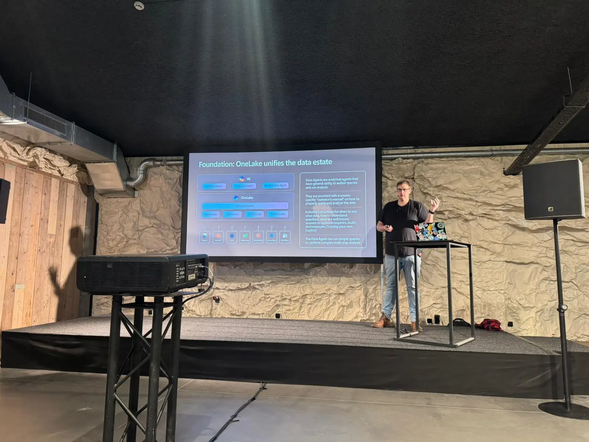

Black Slope
Deep technical, no training wheels
The Black Slope is for teams already living in Fabric. Hard problems, architecture choices, performance, capacity, governance, and the parts of the platform that nobody puts on a marketing slide.
- 08:45 - 17:00
- Black Slope room

Schedule
Friday 4 December 2026 · Black Slope room
-
15 min
Opening & welcome
Kick-off of the Black Slope and a quick look at the day ahead.
-
45 min
Exploring permission boundaries in Microsoft Fabric
A walkthrough of the ways to grant item and data access in a Fabric lakehouse architecture, and how to build a least-privilege permission strategy that still works for business users.
Benni De Jagere
More info
Microsoft Fabric offers a wide range of options to define permissions for both item and data access, using different scopes of the platform. As options keep evolving, it's a challenge to determine a viable permission strategy that works for the use cases at hand, offers business users the flexibility they are looking for, and passes those dreaded security checks to be able to move to production.
Focusing on a typical lakehouse architecture for data analysis using Microsoft Fabric, we'll explore the different options that exist to provide access to items and define data security rules. We'll discuss how these different options can impact business users, walking through pros and cons, and providing examples that are manageable and usable at scale. Above all, the guiding principle of least privileged access is our north star, making sure we do our part to keep company data safe.
We'll tie personas and use cases to common data access patterns and assess how Microsoft Fabric can help us get the data closer to where the business user is, helping them to make better informed decisions using validated data.
After wrapping up the walkthrough, people should feel informed about the different options that exist, empowered to make their own decisions based on their own use cases and requirements, and reassured that it really isn't that complicated as it seems.
-
45 min
From Use Case to Custom Skill: Craft AI That Fits Your Fabric Project
How Microsoft's built-in Power BI skills became tailored custom skills for real project needs, and how you can do the same, shown through a live demo.
Marie Vandecavey
More info
When we started using Microsoft's built-in skills for building Power BI reports, this already led to a significant gain in time & results. However, we realised it was not yet a perfect fit for our specific project needs. So we built our own, and the process taught us as much as the result.
Designing a custom skill forces you to structure your thinking: which steps repeat, which decisions matter, which context needs to carry through every run. Inspired by Microsoft's skills (their structure, their patterns,...), we built on top of that foundation rather than starting from scratch. Faster than expected, and with best practices already baked in.
The outcome: dedicated skills that standardise our delivery process, embed our methodology, and give every team member the right guidance automatically, from day one.
In this session, we walk through that journey from hitting the limits of the built-in skills to shipping a tailored one and show you how to do the same for specific use cases through a live demo.
-
45 min
When Translytical Task Flow meets Fabric Data Function
A demo-rich look at User Data Functions: write Python once, reuse it across Fabric, and trigger it straight from buttons in your Power BI reports.
Nico Jacobs
More info
User Data Functions in Fabric are Python functions which you can write once and then reuse in different Fabric items. These functions can modify data, call web services, or just do complex calculations.
Once written, you can call these functions from Fabric Notebooks etc. But the most interesting use case is calling them from Power BI. A new type of action becomes available on buttons: Calling the Data Functions!
In this demo-rich session, you will first learn how to develop User Data Functions, both for transforming data as well as accessing data. Afterwards you see how to invoke these user data functions in Fabric and how to link them with your Power BI reports.
-
45 min
Chat with Your Data: Choosing the Right Conversational BI Tool in the Microsoft Stack
A practical comparison of Microsoft's conversational BI options, from Copilot in Power BI to Fabric Data Agent and Foundry, with a decision framework and an honest cost breakdown.
Valentin Janclaes
More info
Microsoft offers more ways than ever to build a conversational BI experience: Copilot in Power BI, Fabric Data Agent, Fabric IQ, M365 Copilot Chat, Azure AI Foundry. Each has its place, but with overlapping features, different licensing models, and varying implementation complexity. Knowing which one to use, and where to build it, is far from obvious.
In this session, we cut through the noise with a practical comparison of the full Microsoft Conversational BI landscape. We look at the stack from two angles: where you build your agent (Fabric Data Agent, Agent Builder, Foundry) and where your users consume it (M365 Copilot Chat, Power BI, Teams, custom apps). You'll leave with a clear decision framework to match tool to use case, an honest cost breakdown and a realistic view of where Microsoft is taking this: with Copilot in Power BI making way for M365 as the primary interface and the Fabric Data Agent rapidly maturing, the landscape is shifting fast.
-
45 min
Fabric Capacities: The Administrator's Guide
An administrator's deep dive into bursting, smoothing, throttling, monitoring, cost optimization and sizing, so one runaway query never throttles your whole organization.
Sam Debruyn
More info
Fabric Capacities are deceptively simple to provision, but one runaway query can throttle your entire organization. This session is the administrator's deep dive into bursting, smoothing, overage debt, throttling, and the governance levers that keep workloads in check. We cover monitoring with the Capacity Metrics App and Real-Time Hub, cost optimization with reservations and autoscale billing, Spark and SQL Database governance, and practical sizing workflows to go from proof of concept to scaled adoption.
-
45 min
Forget the Enterprise: a pragmatic Fabric architecture for SMEs
A lean, pragmatic Fabric architecture for small and medium-sized organisations: small teams, low costs on F2 or F4, and lessons from real client projects.
Bas Land
More info
If you've seen Fabric demos lately, you'd think it only works for massive enterprises. You know the type: global organisations with 50-person data teams, Data Mesh diagrams that look like London Underground maps, and enough F64 capacities to burn through a few mortgages' worth of cloud spend each year.
But here's the good news: Fabric is not just for them.
In this session, we ditch the enterprise fantasy and show you how to design a lean, pragmatic Fabric architecture tailored to small and medium-sized organisations. Companies that want value fast, who don't have a Centre of Excellence, and definitely aren't hiring a Data Steward anytime soon.
We'll walk through:
1) A minimal-but-scalable Fabric setup that works for teams of 1 to 5
2) Smart defaults and architecture patterns that prioritise delivery over dogma
3) Keeping costs low; yes, Fabric can run fine on just F2 or F4
4) Real-world examples from actual client projects (the good, the bad, and the duct-taped)This session is opinionated, practical, and built for the 80% of us who live outside enterprise walls. If you're working with SMB clients (or are one) this talk will give you the tools and confidence to get started with Fabric your way.
Takeaways:
- A ready-to-apply blueprint for a small-scale Fabric data platform
- Lessons from real-world SME implementations
- What to ignore from those flashy demos, and what actually mattersForget the enterprise. It's time to build something pragmatic.
-
45 min
Securing Microsoft Fabric with Private Link
How Private Link works in Fabric at tenant and workspace level, how to set it up, and what it means for developer workflows, DevOps and architecture.
Olivier Van Steenlandt
More info
Data Security has never been as important as now, and organizations need clarity on how to apply it effectively on a modern data platform. This session will explain how Private Link works in Microsoft Fabric. The different types: tenant level and workspace level, will be covered, and the pros and cons will be shared.
After a theoretical introduction, we will dive into a practical approach, how the setup works, what the consequences are of implementing Private Link, and what hurdles you might be running into.
Throughout the session, the challenges, limitations, and opportunities will be discussed, and tips & tricks will be shared. This might include impact on developer workflows, DevOps practices, general architecture, and more.
By the end of the session, attendees should have a clear overview of the functionalities and limitations of Private Link, and will have seen the practical implementation of Private Link. This session is intended for Data Architects, Data Engineers with a security interest, and others who are interested in security for Microsoft Fabric.
Tickets are released in three waves: the earlier you book, the less you pay.
Get tickets